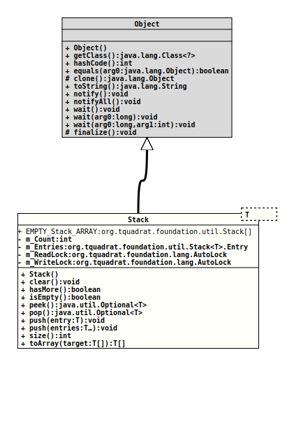

java.lang.Object
org.tquadrat.foundation.util.Stack<T>
- Type Parameters:
T- The type for the stack entries.
@ClassVersion(sourceVersion="$Id: Stack.java 966 2022-01-04 22:28:49Z tquadrat $")
@API(status=STABLE,
since="0.0.5")
public final class Stack<T>
extends Object
A stand-alone implementation for stack, without the ballast from the
Collections framework.
This implementation is not synchronised, but thread-safe.
This implementation is not synchronised, but thread-safe.
- Note:
-
- This class does not implement the interface .
- Author:
- Thomas Thrien (thomas.thrien@tquadrat.org)
- Version:
- $Id: Stack.java 966 2022-01-04 22:28:49Z tquadrat $
- Since:
- 0.0.5
- UML Diagram
-

UML Diagram for "org.tquadrat.foundation.util.Stack"
{kind=link}
-
Nested Class Summary
Nested Classes -
Field Summary
Fields -
Constructor Summary
Constructors -
Method Summary
Modifier and TypeMethodDescriptionfinal voidclear()Empties the whole stack in one go.final booleanhasMore()Tests if the stack is not empty.
If concurrent threads will access the stack, it is still possible that this method will returntrue, but a call topop()immediately after returnsnull.final booleanisEmpty()Tests if the stack is empty.
If concurrent threads will access the stack, it is still possible that this method will returnfalse, but a call topop()immediately after returnsnull.peek()Returns the first entry from the stack without removing it from the stack.
If concurrent threads will access the stack, it is still possible that this method will return a different value than a consecutive call topop().pop()Returns the first entry from the stack and removes it.final voidAdd the given entry to the stack.final voidAdd the given entries to the stack, in LIFO order.final intsize()Returns the number of entries on the stack.final T[]Returns all entries that are currently on the stack as an array without removing them, with the top most entry as the first.
-
Field Details
-
EMPTY_Stack_ARRAY
An empty array ofStackobjects. -
m_Count
The number of entries on the stack. -
m_Entries
The entries. -
m_ReadLock
The read lock. -
m_WriteLock
The "write" lock.
-
-
Constructor Details
-
Stack
public Stack()Creates a newStackobject.
-
-
Method Details
-
clear
Empties the whole stack in one go. -
hasMore
Tests if the stack is not empty.
If concurrent threads will access the stack, it is still possible that this method will returntrue, but a call topop()immediately after returnsnull.- Returns:
trueif there are still entries on the stack,falseotherwise.- See Also:
-
isEmpty
Tests if the stack is empty.
If concurrent threads will access the stack, it is still possible that this method will returnfalse, but a call topop()immediately after returnsnull.- Returns:
trueif there are no entries on the stack,falseotherwise.- See Also:
-
peek
Returns the first entry from the stack without removing it from the stack.
If concurrent threads will access the stack, it is still possible that this method will return a different value than a consecutive call topop().- Returns:
- An instance of
Optionalthat holds the first entry; will be empty if the stack is empty.
-
pop
Returns the first entry from the stack and removes it.- Returns:
- An instance of
Optionalthat holds the first entry; will be empty if the stack is empty.
-
push
Add the given entry to the stack.- Parameters:
entry- The value to add.
-
push
Add the given entries to the stack, in LIFO order. Nothing happens, if the provided array is empty.
The provided array may not containnullelements.
If the push failed for one element of the array, the stack remained unchanged.
The method guarantees that the elements of the array are stored to the stack in consecutive order, even in a multithreaded environment.- Parameters:
entries- The values to add.- Throws:
IllegalArgumentException- At least one element of the provided array isnull.
-
size
Returns the number of entries on the stack.- Returns:
- The number of entries.
-
toArray
Returns all entries that are currently on the stack as an array without removing them, with the top most entry as the first. Therefore, this is more or less apeek()on the whole stack.
If the provided array is larger that the number of elements on the stack, the exceeding entries on that array remained unchanged.- Parameters:
target- The target array; if this array has an insufficient size, a new array will be created.- Returns:
- An array with all entries on the stack; never
null. If the provided array was large enough to take all elements, it will be returned, otherwise the returned array is a new one and the provided array is unchanged.
-